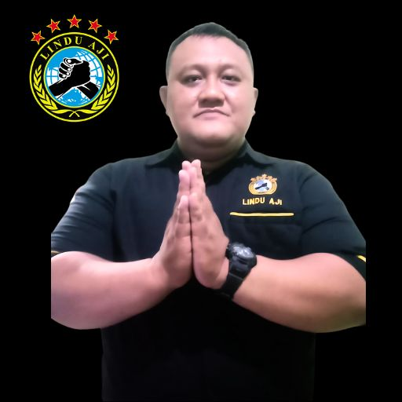
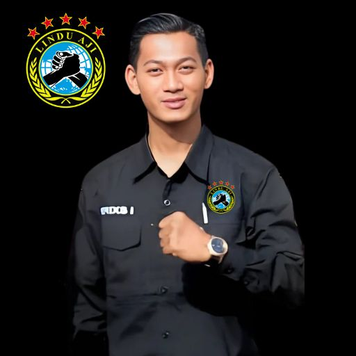
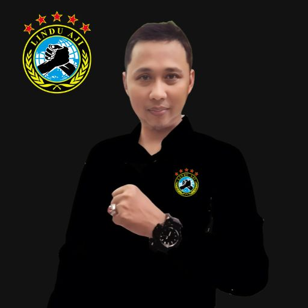

Lindu Aji adalah sebuah organisasi masyarakat yang lahir dengan semangat untuk memberikan kontribusi nyata bagi kemajuan dan kesejahteraan masyarakat di Kabupaten Semarang. Kami berfokus pada kegiatan kemanusiaan, sosial, dan pemberdayaan yang dirancang untuk menjawab tantangan yang dihadapi oleh berbagai lapisan masyarakat, khususnya mereka yang berada dalam kondisi rentan. Dengan visi untuk menciptakan perubahan yang positif dan berkelanjutan, Lindu Aji aktif dalam memberikan bantuan pada saat bencana, menyediakan pelatihan keterampilan yang dapat meningkatkan kemandirian ekonomi, serta mendukung program-program yang mendorong akses yang lebih baik terhadap pendidikan dan kesehatan. Kami percaya bahwa setiap individu memiliki potensi untuk berkembang, dan dengan dukungan yang tepat, mereka dapat menghadapi tantangan hidup dengan lebih kuat dan mandiri. Kami tidak hanya bekerja untuk masyarakat, tetapi juga bersama masyarakat. Kolaborasi kami dengan berbagai pihak, termasuk pemerintah dan organisasi lain, menjadikan setiap langkah yang kami ambil lebih efektif dan tepat sasaran. Dengan semangat gotong royong, Lindu Aji hadir untuk mewujudkan harapan dan memberi dampak positif yang nyata bagi Kabupaten Semarang, satu langkah kecil demi langkah besar menuju masa depan yang lebih baik.
[Erie Wicaksono Panggayuh, S.H.]
[Retno Istiyanto]
[Erixs Ibrahim, S.H.]
[Gava Joko Pratama]
